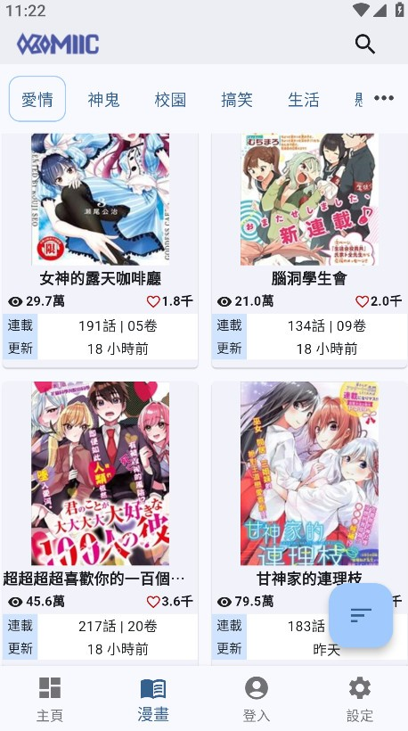
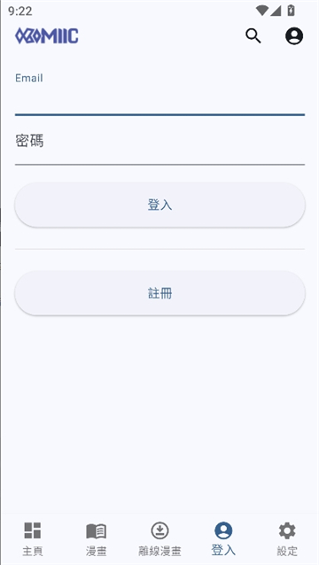

漫画追更再也不用来回切 App——Komiic 新手五分钟上手
第一次接触 Komiic 也不怕，这篇从安装到第一次追更带你完整走一遍，收藏、阅读、下载三个核心功能一次摸透。
这篇能带你从完全不懂到用起来——不需要任何软件基础，跟着做就行。
它到底是干嘛的
简单说，Komiic 就像一个漫画界的视频聚合播放器——你可以去它的官网看看完整介绍。你平时追漫画是不是要在好几个平台之间跳来跳去？这个 App 把不同来源的漫画统一到了一个界面里，收藏、追更、离线下载全都在一个地方搞定。
你可以把它想象成一个专属的漫画书架：看上的书往书架上一放，新章节出来自动提醒你；通勤路上没网？提前把要看的章节下载好，地铁里照样能看；换了手机也不怕，登录账号书架跟着走。

五分钟上手：从下载安装到第一次追更
第一步：拿到安装包
安装包从官方下载拿就行——装好之后打开，你会看到首页的推荐流和分类入口。
第二步：搜一部你想追的漫画
首页顶部有搜索框，直接输漫画名。比如你想找《间谍过家家》，输进去就能看到结果。点进详情页，里面会列出这部漫画的所有章节、更新时间、简介之类的信息。
第三步：加入收藏——这步很重要
在详情页找那个星星图标，点一下就收藏了。收藏之后会发生三件事：
- 新章节上线时，App 会在通知栏推给你
- 这部漫画会出现在「我的收藏」列表里，下次打开直接就能点
- 换手机登录同一个账号，收藏自动同步过去
别小看收藏这一步——很多新手看完就走了，下次再找就得重新搜。加了收藏等于给这部漫画装了一个追踪器，追连载的体验差很多。
第四步：开始读——顺手挑一个舒服的模式
点进任意章节，屏幕中间点一下呼出工具栏，里面有「阅读模式」的选项。刚进来默认是翻页模式，如果你看的是韩漫条漫，建议切到滚动模式——手指上滑自动换图，全程不用翻页，舒服很多。
上手后先玩这三个功能
第一个功能：音量键翻页。进入阅读器呼出工具栏，找到音量键相关的开关打开它。打开之后，用手机的音量加/减键就能翻页或滚动——躺着看漫画的时候再也不用划屏幕了，单手操作特别方便。具体键位映射和灵敏度调节可以翻komiic文档里的阅读器设置章节。
第二个功能：离线下载。在章节里呼出工具栏点下载按钮，或者在漫画详情页点「下载全部」。下好的章节存在「我的 → 离线下载」里。地铁、飞机、地下车库这些没信号的地方，提前下好就不会断更。你会发现离线读比在线读还流畅——图片全在本地，加载速度比在线快多了。
第三个功能：横屏双页模式。如果你有平板，或者手机愿意横过来拿，在阅读器里切到双页模式，同时显示左右两页，跟看实体书一模一样。日漫里那些大场面跨页画面，横屏双页才能完整看完。手机屏幕小的话可能两页挤在一起看不清，平板效果最佳。

小白的三个常见疑问
疑问一：收藏和看过有啥区别？加了收藏之后通知会不会太吵？
看过是自动记录的，你打开过哪章它自动记下来，但不会推更新通知。收藏是你主动加的，才会有追更提醒。建议收藏列表别超过 30 部——追完一部就及时移除，通知才不会变成骚扰。
疑问二：下载的漫画占手机空间吗？换手机了还在吗？
下载的章节是物理存在手机存储里的，肯定占空间，但一般单部漫画也就几十兆。换手机或者卸载重装 App 之后，下载的章节不会跟着账号同步——得重新下载。所以重要的漫画别急着卸载，或者先把下载目录备份一下。
疑问三：不同来源的漫画更新速度一样吗？
会有差异，不同源的抓取频率不一样。如果你追的某部漫画一直没更新，可能是它当前用的源暂时没抓到新章节，可以在设置里切换一下来源试试。
接下来可以怎么玩
以上就是从零到追更的完整流程了。进阶一点的话，可以去设置里把并发下载数调高（WiFi 下建议 4-8 章同时下），追连载时打开「自动下载新章节」，省心很多。也可以试试夜间模式，睡前看漫画不伤眼——在阅读器工具栏里就能切换。
总之，Komiic 把追漫画这件事从来回切平台变成了一个闭环：搜 → 收藏 → 读 → 下载离线 → 新章节提醒。用两次你就回不去了。手头的资料我同步到了GitHub、Gitee 和 GitCode，三方备份随时能查。